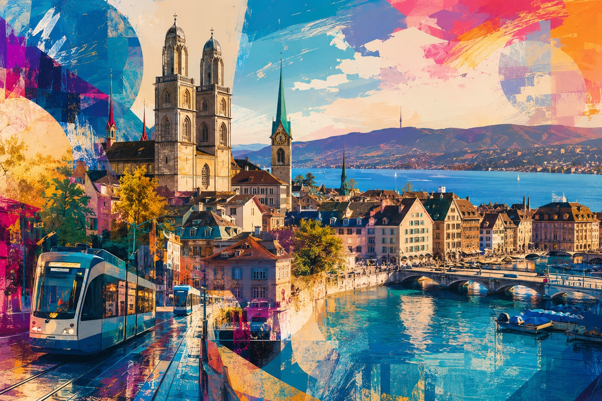

KI / Produktivität
ARKI
KI-Assistent für Brocki Arche Zürich: recherchiert automatisch Artikel, schreibt ausführliche Inserate und bereitet sie direkt fürs Einstellen vor.

Project Systems
Der Schwerpunkt liegt nicht auf einzelnen Screenshots, sondern auf echten Abläufen: entwickeln, absichern, deployen, betreiben und verbessern.
Meine eigene kleine Infrastruktur mit Proxmox und pfSense: segmentierte Netze, Reverse Proxy, lokale CA für interne Apps, TrueNAS SCALE, GitLab CI/CD, Authelia, Vaultwarden, Jellyfin, eigene Websites und zentrales Monitoring mit Wazuh.
KI / Produktivität
KI-Assistent für Brocki Arche Zürich: recherchiert automatisch Artikel, schreibt ausführliche Inserate und bereitet sie direkt fürs Einstellen vor.
Infrastructure as Code
IaC-Projekt mit Terraform und Google Cloud Platform, um Cloud- Ressourcen nachvollziehbar, versioniert und reproduzierbar zu provisionieren.
Kundenarbeit
Mehrere kleinere Websites von Design und Textwirkung über Marketing-Überlegungen bis Deployment und technische Betreuung.
Media Service
24/7-Radio mit Musikplänen nach Wochentag. Als nächste Idee: Musikwünsche sammeln und daraus automatisch Playlists bauen.
Full Stack
Kleiner Shop mit Produktseiten, Warenkorb, Checkout-Idee, persistierten Bestellungen und Admin-Bereich als realistischer Business-Flow.
Frontend Craft
Diese Seite selbst: Vanilla HTML, CSS und JavaScript mit Wave-Navigation, Touch-Reveals, 3D-Cube, CRT-Details und mobilem Performance-Polish.
Security Learning
Eigenes Auth-Projekt mit Multi-Faktor-Flow und Authenticator-App auf dem Handy, um Login-Security nicht nur zu nutzen, sondern technisch zu verstehen.
Open Channel
Ich freue mich über Webprojekte, Junior-Rollen und Gespräche, bei denen Frontend, Backend, Infrastruktur oder Security zusammenkommen.